The Golden Dome, “Touchdown Jesus,” The Fighting Irish! There’s no doubt I’m talking about one of America’s iconic universities, Notre Dame in South Bend, Indiana, just two hours’ drive southeast of Chicago. Although my family includes no alumni, its rivalries with the University of Southern California, my son’s alma mater, and the University of Virginia, my husband’s, have often drawn us to Knute Rockne’s home turf. But until a recent road trip home from the east coast, I had never ventured far from the campus and did not realize there was a reason to do so. Imagine my surprise when my husband said, “Let’s stop at the Studebaker Museum.”
The Studebaker Museum. In South Bend? I had no idea. I vaguely recalled that Studebaker was once a car company but knew nothing more. It turns out the Studebaker roots in South Bend are almost as deep as those of Notre Dame. The lure of the developing American West was strong in both 19th century France and Germany. In 1841, the Catholic Bishop of the newly formed midwestern diocese of Vincennes recruited a group of teaching brothers from the recently formed Congregation of the Holy Cross in France. They were tasked with establishing an education center on land at the southernmost bend of the St. Joseph River (named South Bend in 1865).
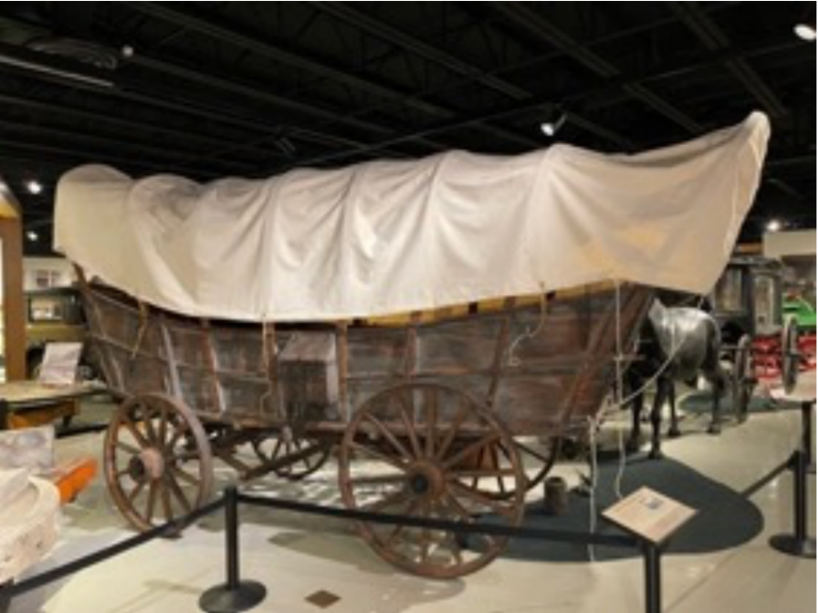
Just over 100 years earlier, five members of the Studebaker family had landed in Philadelphia, bringing their wagonmaking skills from Germany. In 1820, third-generation John Studebaker built a Conestoga wagon to bring his family west to Ohio. The same wagon would later take them to the future South Bend where in 1852 they would establish H & C Studebaker, blacksmiths, and wagon builders. The Conestoga Wagon design would take generations of pioneers west and solidify the wagon business for the next generation of Studebaker brothers.
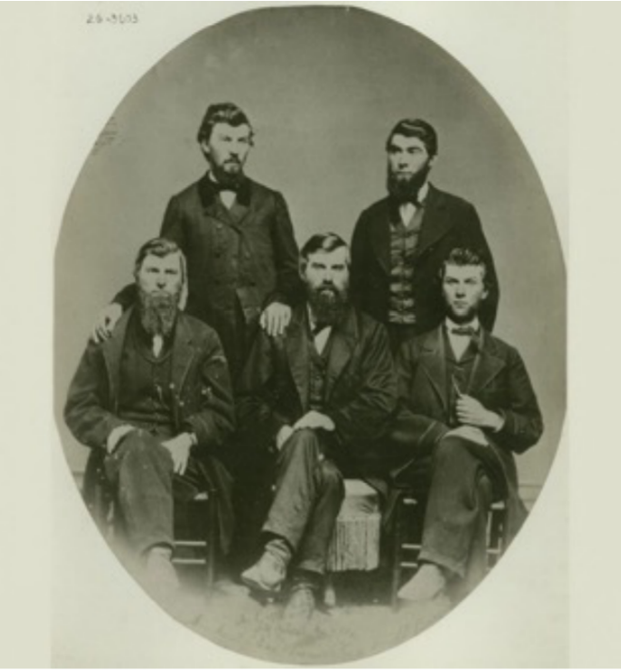
Studebaker Museum photo
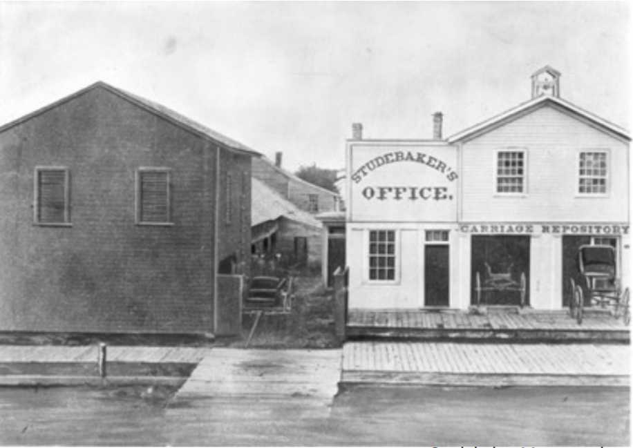
By 1888, the Studebakers were flourishing. Their company built farm buggies, elegant carriages, hearses, commemorative wagons for the 1876 Centennial in Philadelphia and the 1893 Columbian Exposition in Chicago, and even sleighs. The family rose to the top of the South Bend elite.
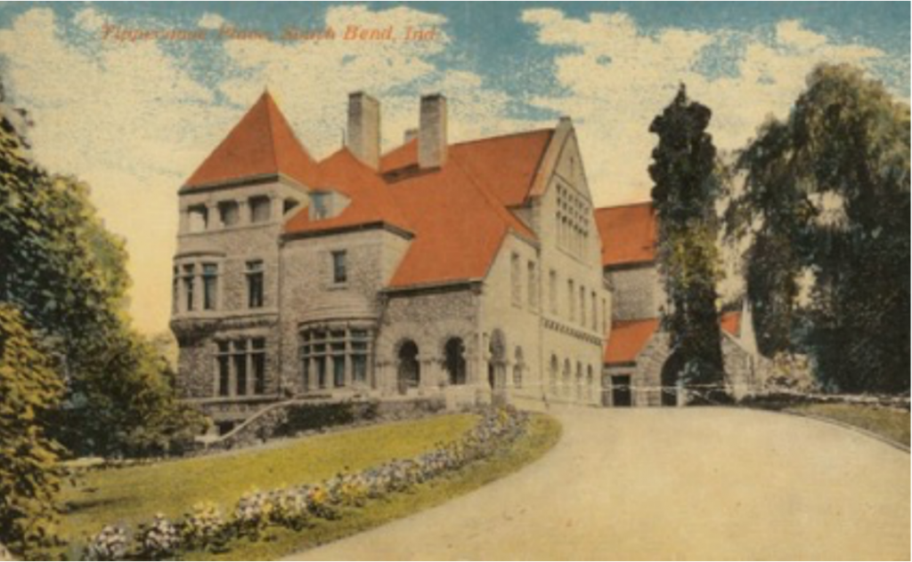
Studebaker Museum photo
The Studebaker brothers would take wagon making far beyond their Conestoga legacy. In 1857, the company supplied wagons for its first armed conflict, the Utah Campaign (the Mormon Rebellion). Also known as Buchanan’s Blunder, the conflict between Brigham Young and the federal government saw 150 Studebaker-built wagons support the government initiative to replace Young as governor. Many similar orders would follow.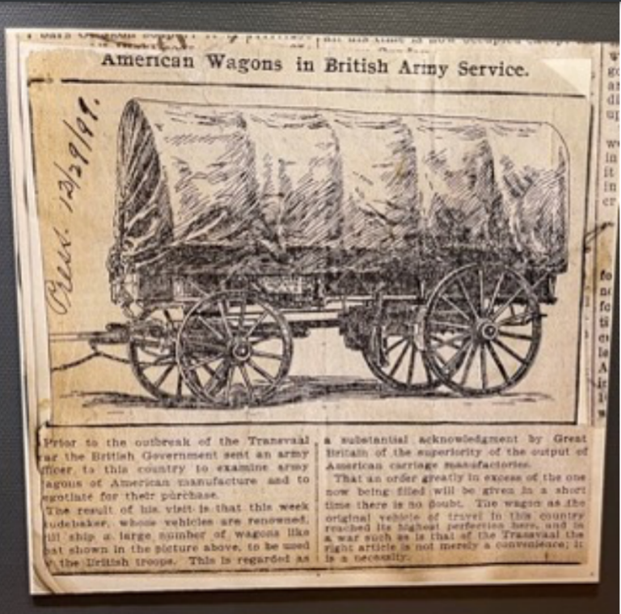
Studebaker Museum photoThe British army would import Studebaker wagons for the Boer War in South Africa. In the Spanish American war, Studebaker supplied ambulance and field artillery wagons to the US Army in Cuba. And in 1912, the Turkish army modernized by ordering some 2000 Studebaker ambulances and supply wagons, suitable for its rugged territory.
In the meantime, Studebaker was debating the transition to automobiles. When the first commercial American car was patented [by George Seldon] in 1896, Studebaker board members were debating a shift to making cars. It would take until 1902 for its first automobile to be introduced. In a fascinating reversal of today’s ongoing move to electric cars. Studebaker launched with electric cars and produced them for the next nine years.
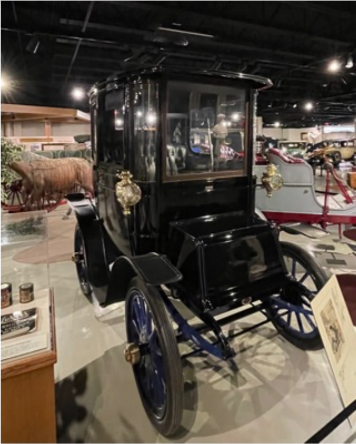
Nevertheless, without Tesla’s 2022 engineering know-how, Studebaker felt electric vehicles were heavy and slow, lacking the range and speed of gasoline-powered cars at the time. Hedging their bets on electric power, the company released its first gasoline automobile in 1904. Over the next 62 years, Studebaker would eventually produce cars at plants in South Bend, Detroit, and Hamilton, Ontario among other locations.
In addition to wagons, the museum preserves a marvelous selection of Studebaker’s automobiles, known for their quality, design and variety. The collection includes a firetruck, a “woodie” station wagon never put into production and even a hearse created just for children.
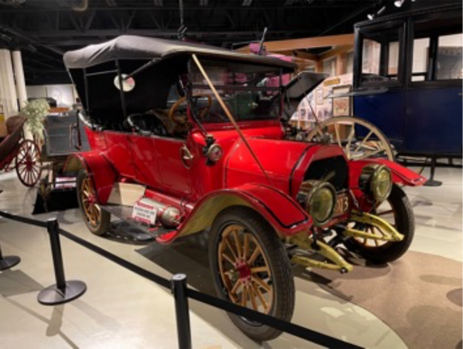
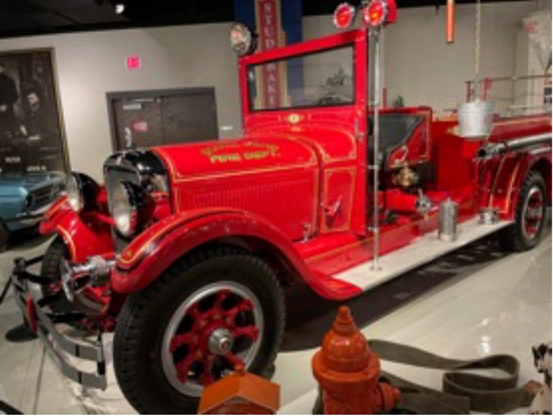
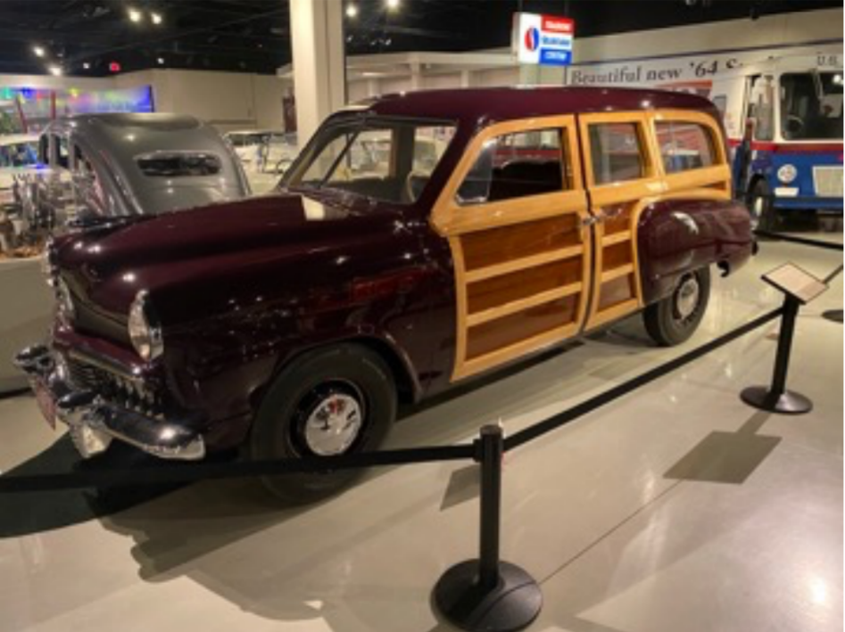
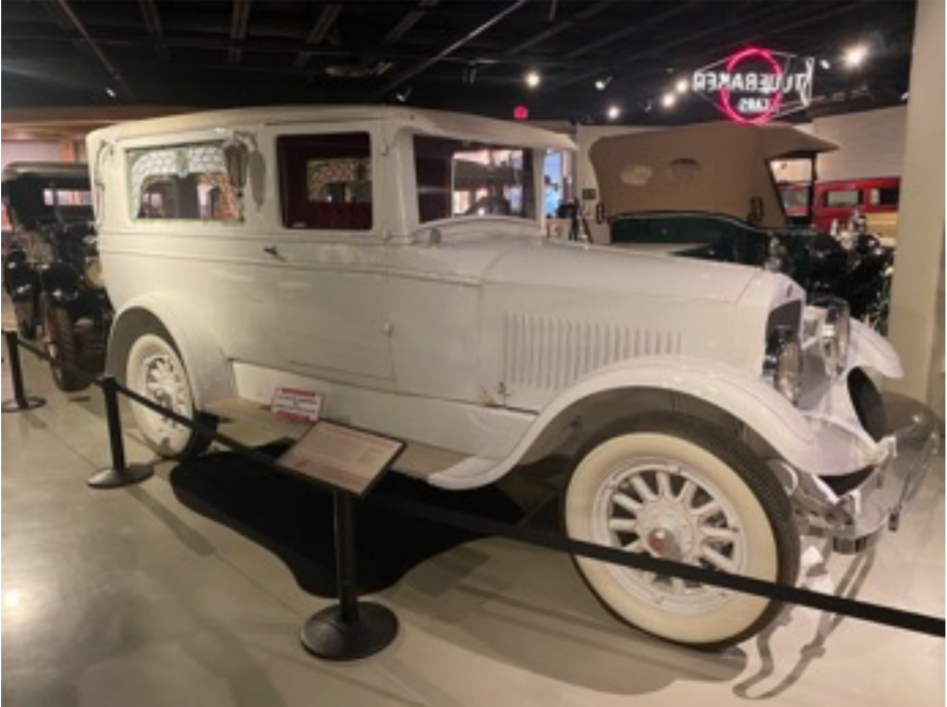
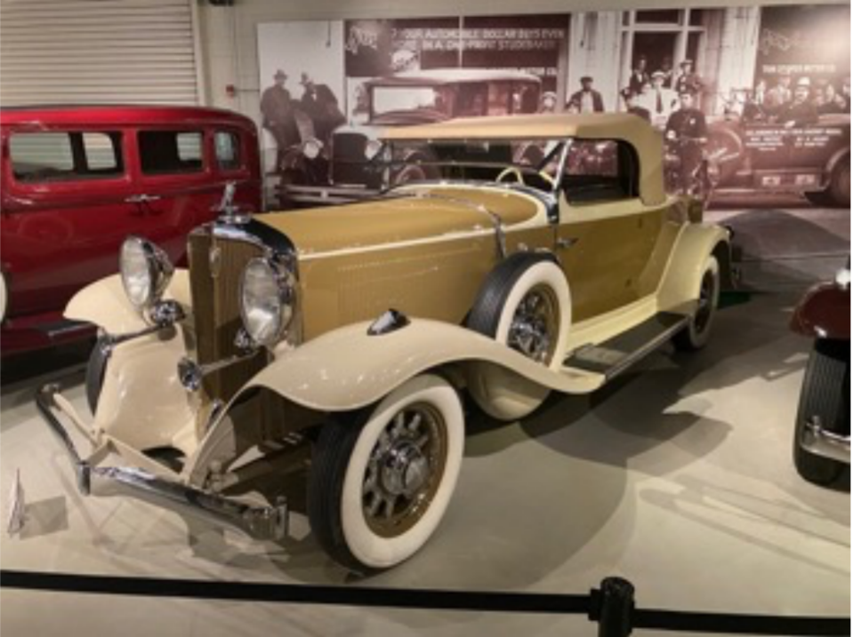
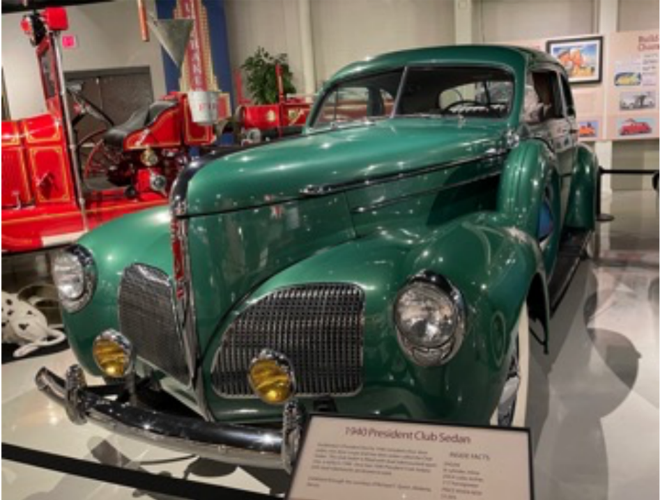
While Studebaker thrived in the 1920’s, it went into receivership in the depression, emerging in 1935 after refinancing. The company would draw on its previous military successes to flourish during World War II, producing trucks and personnel carriers. The postwar years saw many attempts to meet the stiff competition from Ford and General Motors, including innovative styling and a brief merger with Packard. By the 1960’s, however, even the sporty Avanti could not save the company. Production ceased in South Bend in 1963; it continued at the Hamilton, Ontario plant through 1966.
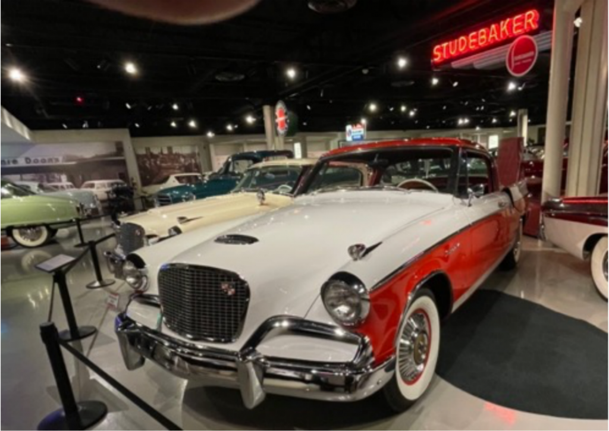
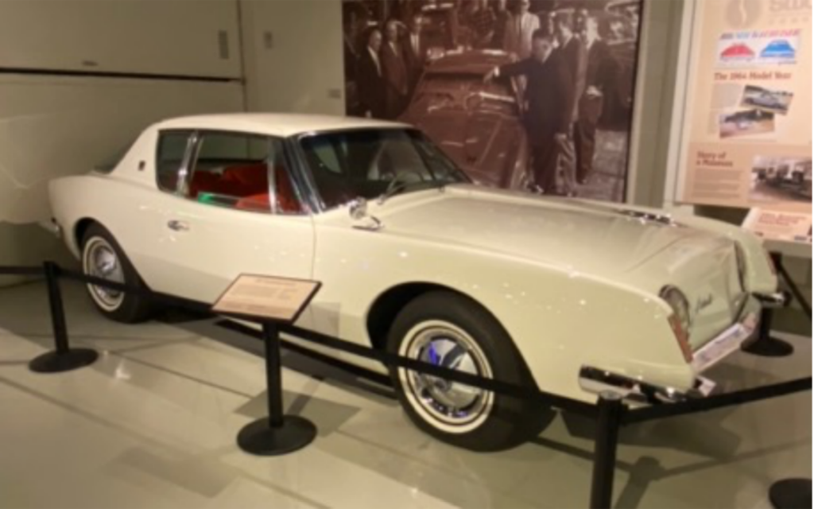
In addition to exhibiting over 130 years of wagon/automobile history, the museum has a workshop on its lower level where Studebaker-loving volunteers can indulge in their restoration passion. We happened upon perhaps the most unique vehicle in the collection being lovingly restored not to its original 1951 glory but to its 1979 rebirth for its featured appearance The Muppet Movie. The distinctive bullet-nosed Commander had been rebuilt so that it appeared to be driven by Muppet characters Fozzie the Bear and Kermit the Frog. The actual driving mechanism was hidden in the trunk; the driver watched the road through a camera mounted in the nose. The car had been left outdoors for many years and is requiring hours of volunteer labor to bring it back to life.
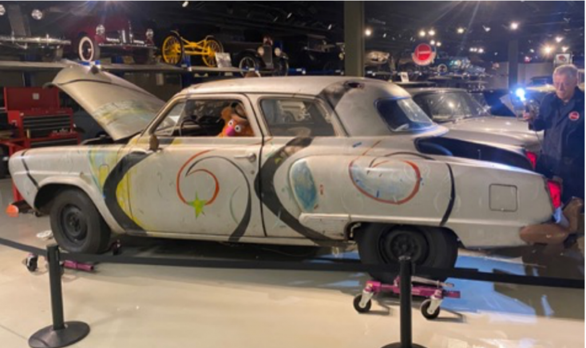
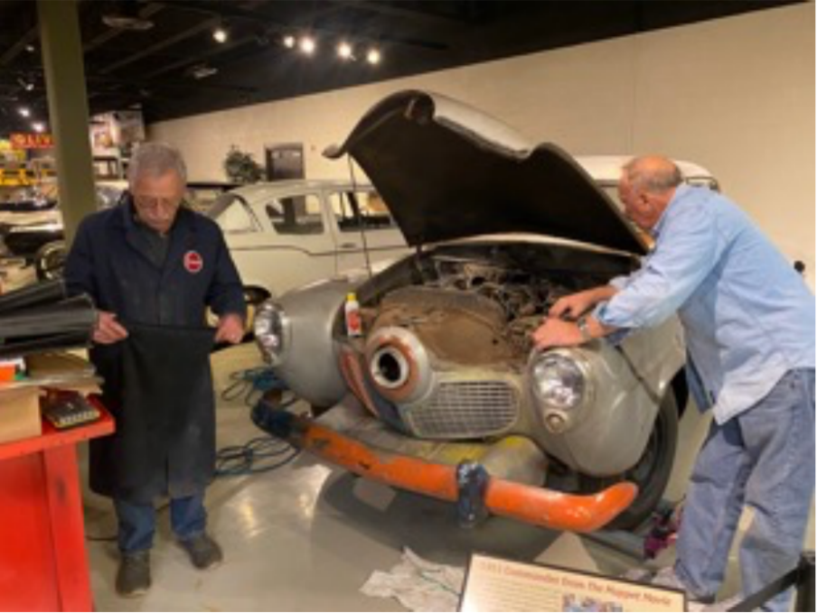 Dedicated volunteers rebuild the engine. |
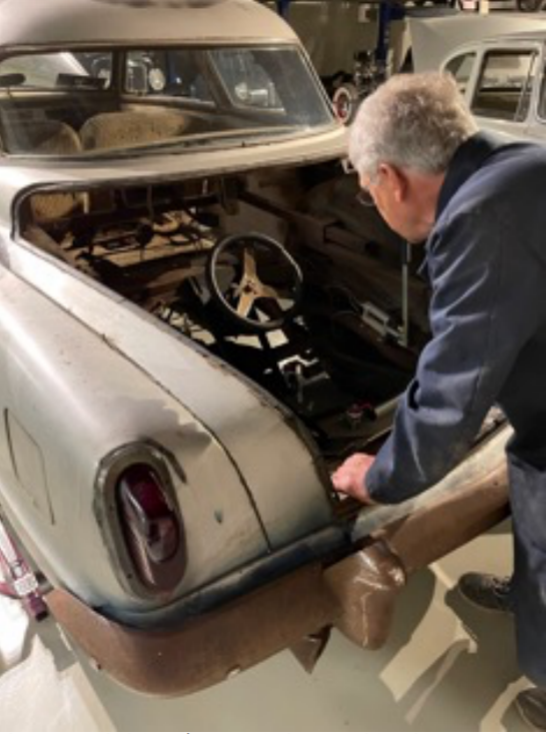 The actual driver’s seat is located in the trunk. |
Although its glory days are long gone, the Studebaker name remains literally larger than life in South Bend. In 1938, as an advertising gimmick to promote its move into aviation engineering, the company planted its name in trees, visible only from the air. Today the trees in what is now Bendix Woods still celebrate the entrepreneurial German immigrants who brought fame and fortune to South Bend, Indiana.
Photo: St. Joseph County Parks ‘
A mystery remained, however. What had prompted my husband Tobin to stop at the museum in the first place? Could it be because, unbeknownst to me until I wrote this story, he’s owned his very own Studebaker for 67 years?
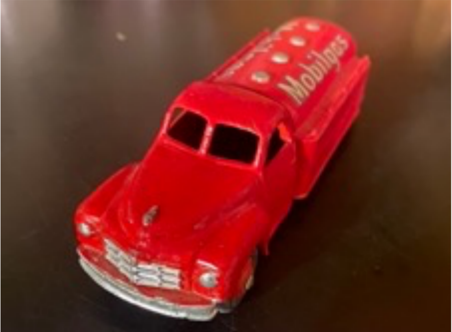 Tobin recalls buying his Dinky Toy Mobile Gas Studebaker truck at Bloomingdale’s in New York at age nine. |
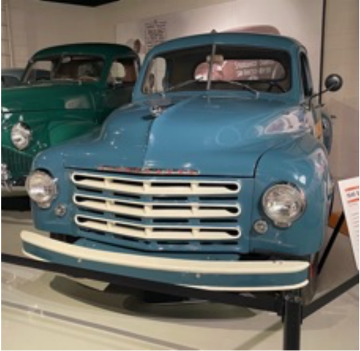 The museum’s 1949 2R-5 truck shares the distinctive Studebaker grill. |